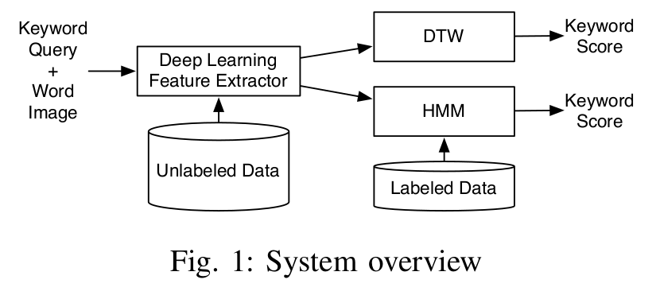
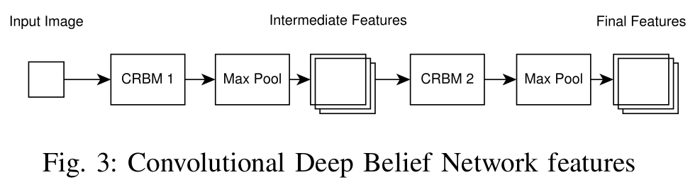
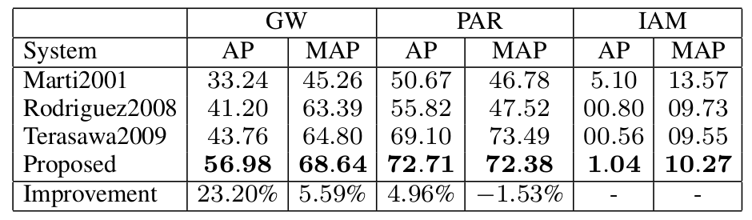
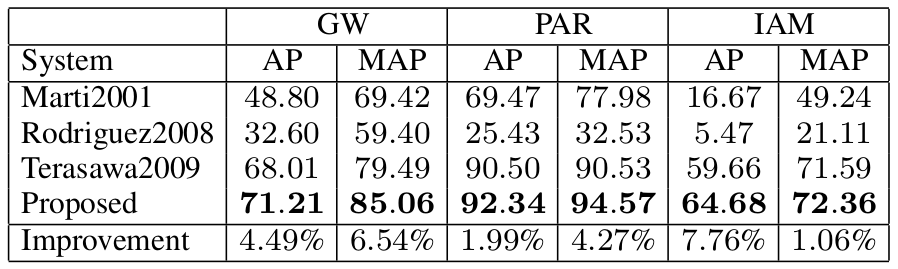

Publications: Deep Learning Features for Handwritten Keyword Spotting
After my previous post about my publication on CPU performance optimization, I wanted to talk a bit about two publications on Handwritten Keyword Spotting, in which we extract features with Convolutional RBM RBM
We published two different papers:
- Keyword Spotting With Convolutional Deep Belief Networks and Dynamic Time Warping, in the Proceedings of the International Conference on Artificial Neural Networks (ICANN-2016), Barcelona, Spain
- Mixed Handwritten and printed digit recognition in Sudoku With Convolutional Deep Belief Network (Link will come), in the Proceedings of the International Conference on Pattern Recognition (ICPR-2016), Cancun, Mexico
The second paper is mostly a large extension of the first one, so I'll focus on the complete version.
On a side note, I also co-authored a third paper:
- Inkball Models as Features for Handwriting Recognition, in the Proceedings of the International Conference on Frontiers of Handwriting Recognition (ICFHR-2016), Shenzen, China
We mostly used our existing system to generate features for a comparison between different set of features for handwritten keyword spotting. It was my first time in China and I enjoyed the stay a lot. I also had the chance to meet my girlfriend in Shenzen, all the more reason to mention this publication :)
Back on the main subject. The idea behind these publications is to a Convolutional Deep Belief Network (CDBN) to extract features from the images and then pass these features to either a Dynamic Time Warping (DTW) algorithm or an Hidden Markov Model (HMM). The following image describe the overall system:
The features are extracted from preprocessed normalized binary images. Using a sliding window, moving from left to right, one pixel at a time, the features are extracted on each window. The feature extractor is a Convolutional Deep Belief Network, trained fully unsupervised. The features are then normalized so that each feature group sum to one and then each has zero-mean and unit-variance. The network used for feature extraction is depicted in the following image:
Two Convolutional Restricted Boltzmann Machines (CRBMs) are used, each followed by a max pooling layer.
Once the features are extracted, they can be passed to the classifier for keyword spotting scoring. We tested our features with two different approaches for word scoring. The first one is a template matching strategy, Dynamic Time Warping (DTW), is a very simple measure of distance between two sequences of different length. The two sequences are warped non-linearly to minimize the distance between each pair of features. A template from the training set is compared to the word image being evaluated. This works pretty well for simple data sets but fails when the writing styles of the test set are not known in the training set. The second classifier is more powerful and trained, a Hidden Markov Model (HMM). Character models are trained using the entire training set. From these character models, a keyword model as well as an unconstrained model (the filler model) are constructed. The probability of these two models is computed using Viterbi and the final score is computed using log-odds scoring of these two models using the filler model as a form of normalization.
This technique was evaluated on three datasets (George Washington (GW), Parzival (PAR) and IAM offline database (IAM)). Our features were compared with three reference feature sets, one heuristic and two local feature sets.
The results for DTW:
Overall, our features exhibit better performance than the other reference. Except for the Mean Average Precision on the PAR data set. The very low performance on PAR with DTW is explained by the fact mentioned earlier that it has poor generalization to unknown writing styles.
The results for HMM:
With HMM, our features are always better than the other feature sets. However, the margin of improvement is smaller than when using DTW.
Overall, the proposed system proved quite powerful and was able to outperform the three tested feature sets on three datasets for keyword spotting.
You can find the C++ implementation on Github.
As for my thesis, I have finished the writings about a month ago and it is now in the hands on my supervisor.
If you want to have a look, the list of my publications is available on this website.
If you want more details on this project, don't hesitate to ask here or on Github, or read the papers :)
I hope the next post about my publications will be about the finalization of my thesis :)
Comments
Comments powered by Disqus